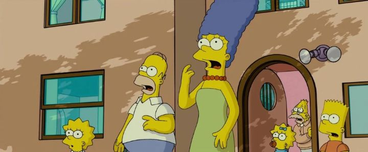

I'd recently watched "The Bob's Burgers Movie" in 2022, and it felt appropriate to revisit "The Simpsons Movie," another big-screen adaptation of a popular FOX adult-comedy cartoon. I had seen it upon its release, like most everyone else. After all, "The Simpsons" was, and still is, one of the most successful and beloved cartoons on television, and this movie was long overdue. People were expecting it for, what, almost 20 years?Indeed, when this was announced, and with a real release date, it was AN EVENT. There were countless trailers for the new gag side-character "Spider-Pig." There was tons of merchandising around the movie. Celebrities wanted to be in cameos. Crowds of people were excited to see it on opening weekend. And the movie knew to expect it to, front-loading the runtime with a bunch of jokes explicitly for people in the movie theater. And the crowd roared with laughter. Later, perhaps as a push for a PG-13 rating and to go beyond what TV allowed, there's an ellaborate sequence of Bart Simpson skateboarding naked across town, conveniently censored the entire way, except a few uninterrupted seconds directly showing his pee-pee, just to shock the audience. It worked, and again my audience was riotous with laughter. My mom with me was not amused at the crude humor that repeated throughout, but this was what "The Simpsons" was all about. And the movie's still fun for fans today, even if the momentum dies a lot without a crowd to watch it with. The movie, appropriately, feels like a long TV episode, perhaps expanded to a full plot for the second half. But like the series, it starts with a bunch of sideplots for everyone in the Simpsons family. Homer Simpson, the dim and lazy Dad, gets pre-occupied with a pet pig. Bart has a near-genuine bonding moment with Homer, but after letting Bart down, he starts looking to neighbor Mr. Flanders as the father-figure he never had. Lisa is trying to bring attention to the town's pollution and its effect on the planet, and meets a perfect Irish boyfriend, new to town, along the way. And Marge is concerned about the mad vision Grandpa Simpson has in Church, spouting seemingly random nouns about the destruction of Springfield, and is the first to notice when the vision begins to come true. This does in fact culminate into the biggest threat to the town and everyone in it yet, and of course, it's all Homer's fault. At the time, it was a good story for Simpsons. Everyone in the family gets a chance to shine, and their characterizations get new and emotional developments that we hadn't seen before (later TV seasons would retread some of this when they ran out of story ideas). And the threat and climax was bigger than before. This wouldn't win any awards, but for a slapstick comedy, it was just right.  And there's a ton of gags and jokes to satisfy fans. There are cameoes and cultural references. There are deep cuts to classic episodes that hardcore fans will recognize. Most of the hundreds of past characters appear somewhere in the movie, including in a massive mob scene with the fun fact of including over 320 characters in total.Overall, the movie holds up surprisingly well, perhaps even better than other TV-to-big-screen examples of the past. That's primarily because of the volume of gags, even if the second half drags a little bit in favor of an emotional payoff and character development. And the movie's success also comes from this being "THE Simpsons," the cultural phenomenon that the world had grown up with. The phenomenon as we remembered it, with Matt Groening directly involved, and with the same, simple 2D animation of the show, just slightly smoothed and with bigger, more ambitious scenes, and an ultra-wide cinematic aspect ratio. There's virtually no other show that could command this level of attention of a movie adaption. And "The Simpsons Movie" nails what it had to do, if somewhat predictably. I don't think anything else, not even a Simpsons sequel, could have been the event that this was. And even long-time fans probably regret tht this wasn't the conclusion to the series, which will probably continue for decades to come.
- "Ani" More reviews can be found at : https://2danicritic.github.io/ Previous review: review_The_Secret_World_of_Arrietty Next review: review_The_Sky_Crawlers